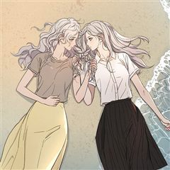
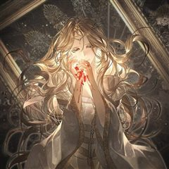

카카오웹툰 추천 인기 순위 TOP 30
카카오웹툰에서 지금 연재 중인 작품을 카카오웹툰 공식 인기 순위 순서로 모았어요. 네이버웹툰·카카오웹툰·레진코믹스에서 조건에 맞는 작품 944개 중 인기 순으로 30개를 골랐어요. 인기 TOP 3: 이번 생은 가주가 되겠습니다, 대사형 선유, 철혈검가 사냥개의 회귀
2026-10-04 기준 · 성인 작품 제외
내 취향으로 더 좁혀서 추천받기 →-
1
 카카오웹툰
카카오웹툰이번 생은 가주가 되겠습니다
“…한번 해 보자. 내가 가주가 되는 거야.” 제국에서 제일가는 가문, 롬바르디의 사생아로 환생한 피렌티아. 게다가 이 가문은 막대한 부는 물론 외교와 문화까지 통달한 말그대로 제국의 역사 자체! 금수저 오브 금수저 인생 당첨! 앞으로는 탄탄대로일 거라 생각했는데…. 아버지는 돌아가시…
사이다로판회귀카카오웹툰에서 보기 → -
2
 카카오웹툰
카카오웹툰대사형 선유
삼류 낭인 곽노의 손에 거둬진 아이들. 사제관계를 맺고 아이들은 어설프게나마 무공과 보법 수련을 하며 각자의 꿈을 꾼다. 먹고살기 위해 곽노는 늘 자리를 비워야 했고, 아이들 중 맏이인 선유는 사제들을 돌봐야 한다. 그는 대사형大師兄이다.
눈물샘자극액션가족카카오웹툰에서 보기 → -
3
 카카오웹툰
카카오웹툰철혈검가 사냥개의 회귀
바스커빌 가문의 사냥개 '비키르'. 사냥개로서 가문에 충성한 보답은 모함과 누명으로 얼룩진 단두대의 칼날이었다. "다시는 토끼를 잡고 나면 삶아지는 사냥개처럼 살지 않겠노라." 그런 그에게 죽음 대신 찾아온 뜻밖의 기회. 어둠 속에서 송곳니를 갈고닦는 비키르의 눈이 붉게 빛났다. "기…
학원물복수극카카오웹툰에서 보기 → -
4
 카카오웹툰
카카오웹툰막내가 뭔갈 많이 숨김
마법사 소년병으로 개고생하던 전쟁터에서 전생의 기억이 떠올랐다. 그리고 이곳이 <폐허 위에 꽂은 검> 소설 속이라는 것도. 하필이면 종말의 몰살엔딩이 예정된 전쟁 소설 속에 빙의했냐고!! 끔찍한 결말을 피하자면 ‘영웅’ 레비아탄 제베르트 옆에 딱 붙어 그가 죽지 않도록 잘 감시해야 한…
힐링로판육아물카카오웹툰에서 보기 → -
5
 카카오웹툰
카카오웹툰황제와 비밀 연애 중인데 나는 그걸 몰라
전쟁광 폭군이 햇살캐 성녀 여주와 사랑에 빠지는 로판 속, 원작 줄거리와 전-혀 상관없는 엑스트라로 환생한 '캐롤리나'. 세기의 로맨스보다 내일의 야근 여부가 더 중요한 소시민 리나의 평범한 일상에도, 어느 날 운명처럼 빛나는 외모의 남자친구가 찾아왔는데... ...그땐 몰랐다. ".…
설렘폭발로판로맨틱코미디카카오웹툰에서 보기 → -
6
 카카오웹툰
카카오웹툰템빨
[신영우 (유저 네임: 그리드)] 세계 최고의 가상 현실 게임 <SATISFY>. 현실에서나, 게임 속에서나, 불운은 항상 그의 곁을 맴도는데.... 퀘스트 수행 중 우연히 발견한 게임 속 로또, '파그마의 기서'. 20억 명이 넘는 유저 중 유일한 최강의 레전드리 직업으로 전직. "…
사이다학원물게임판타지카카오웹툰에서 보기 → -
7

카카오웹툰너의 뜻대로
“네가 사라졌으면 좋겠다고 생각했어. 하지만 정말 그렇게 되리라고는 생각하지 못했어.” 우수한 성적과 뚜렷한 목표로 빛나는 삶을 살고 싶은 윤정. 욕심 없이 평범하고 소박한 삶을 바라던 언니 은아. 그리고 두 자매의 인생에 깊숙이 들어온 남자, 철윤. 오랜 기간 한마음으로 윤정의 곁을…
자극적인카카오웹툰에서 보기 → -
8

카카오웹툰일어나지 않은 것들에 관하여
천 년 만에 용을 살해한 슬레이어, 종전을 이끈 영웅 도미닉. 그는 왕의 견제로 인해 보상 대신 후궁 아델하이드의 호위 기사로 임명받는다. 그러나 아델하이드에게는 추문이 있다. 현재 제 나라를 멸망시킨 왕의 후궁으로 산다는 것. 전 호위 기사들이 모두 그녀에게 마음을 주었다는 이유로…
자극적인눈물샘자극로판카카오웹툰에서 보기 → -
9
 카카오웹툰
카카오웹툰가드패스
평소 먹는 것을 좋아해 뚱뚱하고 큰 체격을 가진 '임세준'. 그는 뚱보라는 놀림에도 신경 쓰지 않는 자존감이 높고 확고한 성격을 가졌다. 그에게 단 한 명의 친구 '서하진'. 그녀는 어릴 적부터 세준을 지켜주기 위해 늘 운동을 배워왔다. 어느 날 세준은 같은 반 일진과 트러블이 생기고…
사이다학원물배틀카카오웹툰에서 보기 → -
10
 카카오웹툰
카카오웹툰악당들에게 키워지는 중입니다
즐겨보던 로판 소설의 엑스트라 소녀로 빙의한 지 1년 만에 내가 곧 쫓겨날 신세라는 걸 알게 됐다. 차라리 내 발로 집을 나가겠다고 했더니, “사실은 이 아이가 내 따님입니다. 그렇지, 따님?” 사이코패스 망나니 공자의 눈에 들어 버렸다? ‘놀이 후에 상대한테 준 돈이 섬 하나를 살…
미스터리로판육아물카카오웹툰에서 보기 → -
11
 카카오웹툰
카카오웹툰창귀무쌍
평생 전장 만을 활보하며 살아온 늙은 노병 '추이'는 자신이 죽여 온 자들의 원념에 사로잡혀 죽음에 이른다. 추이가 다시 눈을 떴을 때, 이유는 알 수 없지만 아직 무공도 배우지 못하고 쟁자수로 일하던 어린 시절로 회귀해 있었다. 다시 돌아온 추이는 전생의 인연인 호예양을 떠올리며 호…
자극적인액션복수극카카오웹툰에서 보기 → -
12
 카카오웹툰
카카오웹툰세이렌: 악당과 계약 가족이 되었다
아리아는 계약 결혼을 제안했다. 그것도, 악마에게 영혼을 팔았다는 발렌타인의 대공자에게. 자신을 지키고, 그를 지키기 위해서. [나와 결혼해.] 아리아는 단풍잎 같은 손으로 쪽지와 함께 혼인 서약서를 내밀었다. [계약 결혼이니까 10년 뒤에 이혼…….] 그러자 어린 대공자는 쓰고 있던…
로판회귀카카오웹툰에서 보기 → -
13
 카카오웹툰
카카오웹툰관존 이강진
미친놈인가? 아니면 흔한 관심종자인가? 사람의 다름을 이해 못 하는 제자 이강진. 그리고 그걸 이해시켜주고자 하는 스승 곽노. 두 사제師弟의 따뜻한 휴먼스토리.
액션성장물카카오웹툰에서 보기 → -
14
 카카오웹툰
카카오웹툰천하제일인의 소꿉친구
정파를 배신하고 천마 휘하의 마인이 되어 버린 구양천. 마인으로서 살아가며 천마의 명으로 본인의 의지와는 상관없이 수많은 악행을 저지르고 후회로 점철된 인생을 살아가게 된다. 천마가 일으킨 정마대전. 정파의 삼존 존재마저 무릎을 꿇린 천마를 베어낸 위설아로 인해 길고 길었던 지옥 같은…
액션하렘카카오웹툰에서 보기 → -
15
 카카오웹툰
카카오웹툰남주들과 외딴섬에 갇혀버렸다
소설 속 남주들과 외딴섬에 갇혀버렸다. 그것도 19금 피폐 소설에 나오는 남주들과 말이다. 하지만 내가 빙의한 마거릿이란 캐릭터는 여주를 시기하여 괴롭히다가 곧 남주들에게 죽을 운명. 그러니 살아남으려면 일단 남주들에게서 도망가야 하는데... "마거...릿?" 남주 1의 손이 도망치려…
설렘폭발로판빙의카카오웹툰에서 보기 → -
16
 카카오웹툰
카카오웹툰재활용 머학생
'쓰레기 머학생'이었던 수레기, 의대생이 되어 돌아왔다. 제멋대로 대학생활을 보내며 전공이었던 수학을 잔뜩 싫어했던 수레기는 졸업 후 수능을 다시 보고 의대에 합격한다. 늦은 나이에 다시 신입생이 되어 시작하는 두 번째 대학생활! 이번에는 이전처럼 심각한 아싸처럼 살지도, 공부도 던지…
개그미스터리청춘카카오웹툰에서 보기 → -
17
 카카오웹툰
카카오웹툰무장 - 무투전
고려를 지키는 무신이라 불리는 권. 그의 어린 시절부터 이야기는 시작된다. 주인공 권과 그의 형 정은 고려에서 가장 강했던 무인이자 노비였던 만적의 아들들이다. 아버지 만적이 노비 해방 운동을 일으키지만 실패로 끝나고 죽음을 맞자 정과 권은 누군가로부터 계속해서 목숨을 위협받는다. 살…
자극적인액션복수극카카오웹툰에서 보기 → -
18
 카카오웹툰
카카오웹툰병아리반 헌터는 효도 중!
시스템에 의해 특별한 힘을 가진 각성자들이 생겨나는 세상. 새봄 유치원 병아리반, 그루는 4살에 S급 헌터로 각성한다. 그리고 그와 함께 주어진 퀘스트가 하나 있었으니……. [퀘스트: 아이에게는 든든한 보호자가 필요합니다!] 보호자가 필요한 이유. 그것은 바로 그루에게 엄마, 아빠가…
힐링로판카카오웹툰에서 보기 → -
19
 카카오웹툰
카카오웹툰은해상단 막내아들
『은해상단 막내아들』 천하제일의 상재(商才)를 타고난 은서호. “어째서 무림맹이 나를…….” “맹의 윗분들께서 자네가 거슬린다고 하더군. 쯧, 그놈의 돈이 뭐라고.” 백도 무림을 자처하던 무림맹의 칼에 살해당한 나는 상단 일을 처음 배우던 날로 돌아왔고, 굳게 다짐한다. 이번 생에서는…
사이다눈물샘자극액션회귀카카오웹툰에서 보기 → -
20
 카카오웹툰
카카오웹툰무한의 마법사
마굿간에 버려져 평민으로 키워진 아이, 시로네. 타고난 통찰력으로 글까지 깨우친 아이는 도시로 나간 어느 날 그토록 궁금해하던 마법을 경험한다. 그 길로 마법사를 꿈꾸게 된 시로네. 하지만 신분의 장벽이 두터운 이 곳은 아이에게 냉혹하고, 그는 채 어른이 되기도 전에 이 세상의 이면을…
미스터리학원물성장물카카오웹툰에서 보기 → -
21
 카카오웹툰
카카오웹툰검술명가 막내아들
진 룬칸델 대륙 최고의 검술명가, 룬칸델의 막내아들 룬칸델 역사상 최악의 둔재 비참하게 쫓겨나 허무한 최후를 맞이한 그에게 다시 한 번 기회가 주어졌다. “너는 이 힘을 어떻게 사용하고 싶더냐?” “저를 위해 사용하고 싶습니다.” 전생의 기억과 압도적인 재능, 그리고 신과의 계약 최강…
액션회귀카카오웹툰에서 보기 → -
22
 카카오웹툰
카카오웹툰4000년 만에 귀환한 대마도사
웨스트로드 아카데미의 열등생, 블레이크 가문의 수치. 괴로운 삶을 이기지 못해 죽음을 선택한 프레이 블레이크의 몸에 새로운 영혼이 깃든다. “뭐야, 이 몸뚱이는? 하나부터 열까지 손 봐야겠군.” 대마도사 루카스 트로우맨. 열등생 프레이 블레이크의 육체로 복수의 기회를 얻다!…
사이다학원물환생카카오웹툰에서 보기 → -
23
 카카오웹툰
카카오웹툰무림에 떨어진 현대인
생존을 위해 아르바이트를 하는 만년 공시생인 나. 한밤중 배달을 하다 과속하던 차에 쓰러졌다. 뺑소니로 요절했던 죽음의 기억이 강렬한데, ‘……내가 조휘?’ 어느 순간 다 쓰러져 가는 조가철방의 차남이 되었다. 날아가는 새를 떨어뜨릴 권세도, 의지를 관철시킬 무력도 없다. 일가족을 몰…
사이다액션게임판타지카카오웹툰에서 보기 → -
24카카오웹툰
저택은 봄을 기다린다
7년의 고독 끝에, 억울한 감금형이 끝났다. 약혼자의 배신을 응징하려던 대가로 부모도, 명예도 잃은 에이프릴 루노스. 복수를 다짐하며 마침내 문을 연 그녀가 맞닥뜨린 건, 자유가 아닌 또 다른 누명이였다. "지난 3년간 일어난 연쇄 살인 사건의 피의자로 에이프릴 루노스를 체포한다."…
미스터리눈물샘자극로판복수극카카오웹툰에서 보기 → -
25
 카카오웹툰
카카오웹툰이 집안을 일으켜세우겠습니다!
키 183, 몸무게 75 3대 500을 치던 완벽한 내 몸은 어디 가고 이딴 짜리몽땅 삼등신이 되다니! 세계적인 기업이자 삼전 그룹의 왕이었던 나, 전성국. 갑작스러운 심장 마비로 죽어버렸다. 생애 최고의 날에 쓰러진 것도 모자라 가난한 집구석의 아기가 되어버렸다고!!! 게다가 집은…
사이다성장물카카오웹툰에서 보기 → -
26
 카카오웹툰
카카오웹툰학사검전
장원에 급제하여 입궁한 학사 운현. 황태자의 취미생활을 전담하는 초라하고 처량한 신세를 한탄하지만, 그럼에도 포기하지 않고 최선을 다해 무공을 익힌다. 그러던 운현은 갑자기 무림을 제패하기 위해 붓을 드는데?! 젊은 나이에 장원에 급제한 학사의 숨겨진 이야기가 시작된다.
미스터리액션직업드라마카카오웹툰에서 보기 → -
27
 카카오웹툰
카카오웹툰검을 든 꽃
피로 물든 제국. 그날 나는 마검에 잠식된 채 가장 사랑하던 사람들을 내 손으로 베었다. 마검에 물든 지 15년째, 인간이 만든 열 개의 검 기오사를 모두 소유한 나는 신검에게 소원을 빌었다. "아무도 죽이지 않았던 과거로 나를 돌려보내줘." 시간은 모든 비극이 시작되기 전으로 돌아가…
눈물샘자극로판회귀카카오웹툰에서 보기 → -
28
 카카오웹툰
카카오웹툰타람 타람 타람
나긋나긋한 움직임으로 들어온 다온이 연회장 중앙에서 멈춰 섰다. 인형만큼이나 무미하고 감정 없는 얼굴이었다. 그럼에도 도도하고 우아해서 얼음 여왕처럼 강렬한 인상을 주었다. 엑서는 다리를 꼬며 낮게 웃었다. “지배자로서, 오늘 밤 널 안겠다.” 운명적인 첫 만남. 한눈에 반해버린 여자…
눈물샘자극설렘폭발로판시대물카카오웹툰에서 보기 → -
29
 카카오웹툰
카카오웹툰너에게 빼앗을 왕관
내 평생을 바쳐 사랑한 사람. 그러나 사랑이라 믿었던 것은 배신이었고, 왕이었던 오라비는 나의 무지로 인해 죽었으며, 조국은 소리 없이 처참히 무너졌다. “다시… 돌아왔어.” 하지만 이번 생은 다를 것이다. 숙부에게 주어졌던 영광은 전부 빛을 잃을 것이며, 남편이 바랐던 찬란한 왕관은…
로판복수극카카오웹툰에서 보기 → -
30
 카카오웹툰
카카오웹툰퀴퀴한 일기
내 주변에 반드시 한 명은 있을 것만 같은, 어쩌면 나 같기도 한 그녀의 일기. 어느덧 40대의 아기 엄마가 된 주인공 이보람과 그의 군단들의 이야기이다. 너무나 시시하고 쩨쩨해서 누구에게 털어놓기도 멋쩍은 일들이 작은 마음을 가진 그들에겐 늘 뜨겁고 강렬하다! 마음속 깊이 숨어있는…
공감개그카카오웹툰에서 보기 →